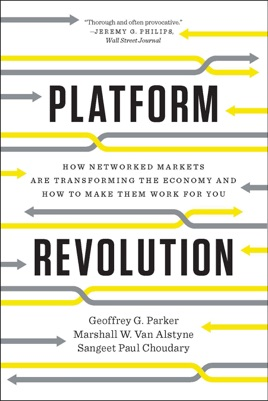

"Platform Revolution: How Networked Markets Are Transforming the Economy and How to Make Them Work for You"
by Geoffrey G. Parker, Marshall W. Van Alstyne, Sangeet Paul Choudary
My background is in SaaS (Software-as-a-Service), and I have a good grasp of the mechanics of its business model.
As I started my 1st bootstrapped startup, which was going to be a "Groupon for companies operating private jets", I realised that a platform-based startup operates with different dynamics and mechanics.
So I deep dived into understanding how platform businesses are built.
In that education phase, this book was the most valuable and most comprehensive resource for me.
Excerpts
Just a couple of useful excerpts and definitions from the book
Definitions
A business based on enabling value-creating interactions between producers and consumers.
Provides open participative infrastructure, designed to facilitate interactions among producers and consumers of value.
Sets governance conditions.
Overarching purpose is matching and facilitating the exchange of goods or services.
Functions
The three functions of the platform:
– pool
– facilitate
– match
Table of Content
- The Power of the Platform
- Principles for Designing a Successful
- How Platforms Conquer and Transform
- Chicken or Egg? Eight Ways to Launch
- Capturing the Value Created by Network
- Defining What Platform Users and Partners
- Policies to Increase Value and Enhance
- How Platform Managers Can Measure What Really
- How Platforms Change Competition
- Platforms Should and Should Not
- The Future of the Platform Revolution
Read
Amazon.com: Platform Revolution: How Networked Markets Are Transforming the Economy and How to Make Them Work for You eBook: Geoffrey G. Parker, Marshall W. Van Alstyne, Sangeet Paul Choudary https://www.amazon.com/Platform-Revolution-Networked-Transforming-Economyand-ebook/dp/B00ZAT8VS4/ref=tmm_kin_swatch_0
Additional resource
The website of one of the author, including its Blog section, is a great resource to follow for "All Things Platform":
(All links are clean)